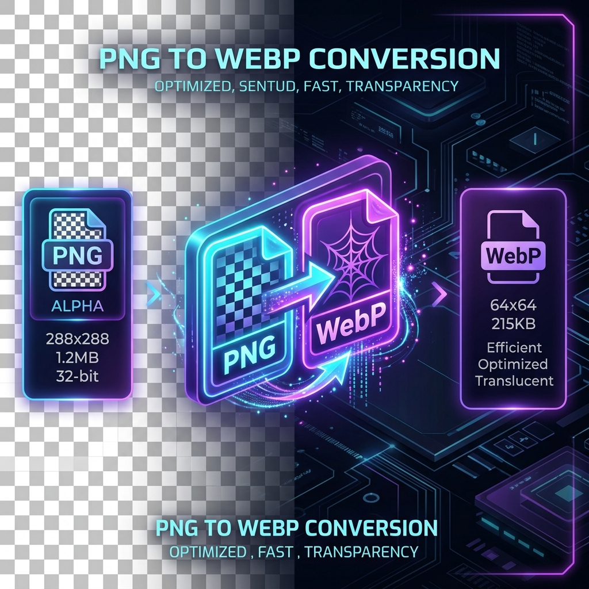

How to Convert PNG to WebP Without Losing Transparency

One of the biggest concerns web developers and designer teams face when optimizing website graphics is losing transparency channels. For a long time, the traditional rule of thumb was clear: use JPEG for photographs and PNG for logos, illustrations, or any image requiring a transparent background. However, relying on PNG files presents a major performance problem. PNGs are lossless, which means they maintain pixel-perfect quality but carry massive file payloads that slow down page speed and harm Core Web Vitals (specifically Largest Contentful Paint).
Enter WebP. Developed by Google, WebP has become the web's standard format for image optimization because it offers both superior compression and full support for alpha channel transparency. In this guide, we will explore the underlying technology of WebP transparency and show you exactly how to convert PNGs to WebP without losing transparency.
1. How WebP Handles Transparency
Traditional JPEGs do not support transparency at all; if you try to convert a transparent PNG to JPEG, the alpha channel is replaced by a solid color (usually white or black). WebP avoids this entirely by offering native support for transparency in both lossless and lossy compression modes:
- Lossless WebP with Alpha: Keeps pixel-perfect quality identical to PNG while reducing file size by 26% on average.
- Lossy WebP with Alpha: Compresses the RGB channels using lossy encoding but keeps the transparency channel (alpha channel) compressed losslessly. This produces highly optimized images that are typically 60% to 80% smaller than their original PNG versions while retaining transparent backgrounds.
2. PNG vs. WebP transparency comparison
| Feature / Metric | PNG (Portable Network Graphics) | WebP (Web Picture Format) | Winner |
|---|---|---|---|
| Transparency Support | Full 8-bit Alpha Channel | Full 8-bit Alpha Channel | Tie |
| Compression Type | Lossless Only | Lossless & Lossy (both with alpha) | WebP |
| Average File Size | Large (unoptimized for web layouts) | Extra Small (up to 80% smaller) | WebP |
| Browser Compatibility | ~99.9% (Universal) | ~98.5% (Broad Adoption) | PNG |
| Animation Support | No (requires APNG) | Yes (supports animated transparency) | WebP |
3. Step-by-Step: Converting PNG to WebP Locally
Using cloud converters exposes your design assets to security and privacy risks. A modern, secure way to compress graphics is by using browser-side client processing tools like PicsConvert. Because the processing occurs within your browser's sandboxed memory using HTML5 Canvas, your files are never uploaded to a server.
- Open PicsConvert: Go to the homepage and drop your transparent PNGs into the file uploader.
- Set Output Format: Select WebP from the output dropdown option list.
- Adjust Quality Factor: Set the quality slider (usually 75% to 85% is the sweet spot for maximum compression without visual degradation). The alpha channel will remain crisp and sharp.
- Download Assets: Click convert and download your newly compressed transparent WebP file.
4. Implementing Dynamic Fallbacks for Legacy Browsers
Although WebP browser support is currently above 98%, some very old legacy browsers or legacy corporate software might fail to decode it. To ensure 100% compatibility while serving WebP to modern devices, use the HTML5 <picture> element. This allows you to serve the lightweight WebP first, falling back to the transparent PNG only if necessary:
<picture>
<!-- Serve WebP first for faster loading -->
<source srcset="logo.webp" type="image/webp">
<!-- Fallback to transparent PNG for legacy clients -->
<img src="logo.png"
alt="Company Logo"
width="300"
height="100"
loading="lazy">
</picture>
5. Key Tips for Perfect WebP Transparency
- Mind the Contrast: Make sure transparent graphics retain high contrast when rendered on dark backgrounds. WebP's color space is YUV420 by default, which can cause minor color blending on extremely high-contrast borders if compressed too aggressively. If you see slight artifacts around sharp edges, raise the conversion quality to 85% - 90%.
- Avoid Double Compression: Do not compress an already heavily lossy file. Always start with the original high-resolution, uncompressed PNG source files.
- Enable Aspect Ratio Lock: When resizing images during conversion, lock the aspect ratio in PicsConvert to prevent the layout from stretching and distorting.
Conclusion
Converting transparent PNG files to WebP is one of the easiest ways to speed up your website. By using WebP, you get the best of both worlds: small file footprints and crisp alpha transparency. Switch to browser-side local batch tools like PicsConvert to optimize your transparent assets safely and instantly, ensuring your website satisfies Core Web Vitals without compromising visual brand aesthetics.